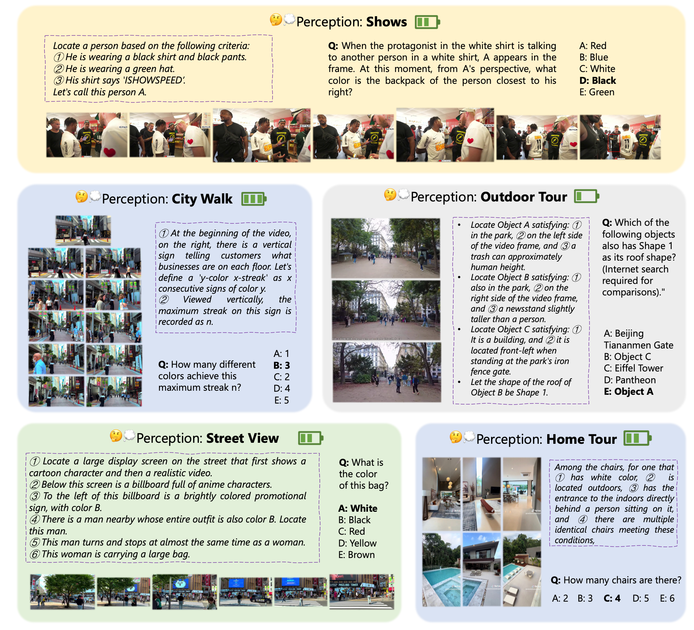
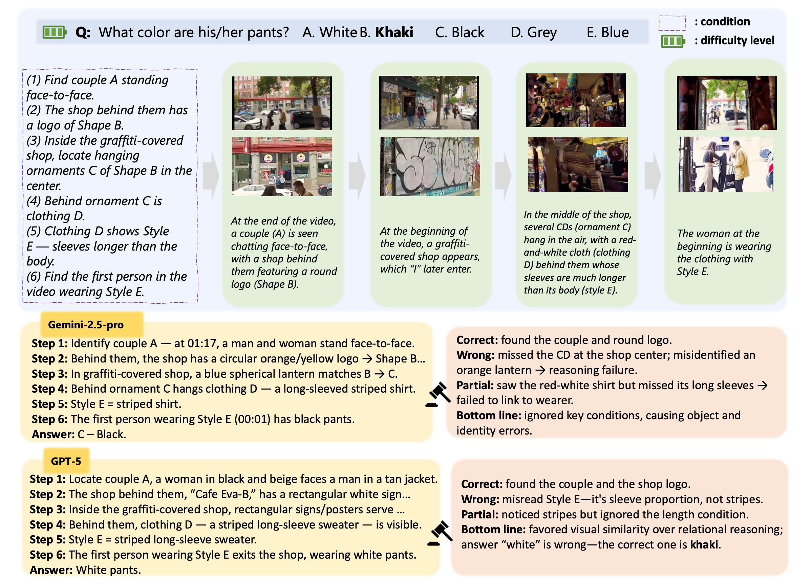
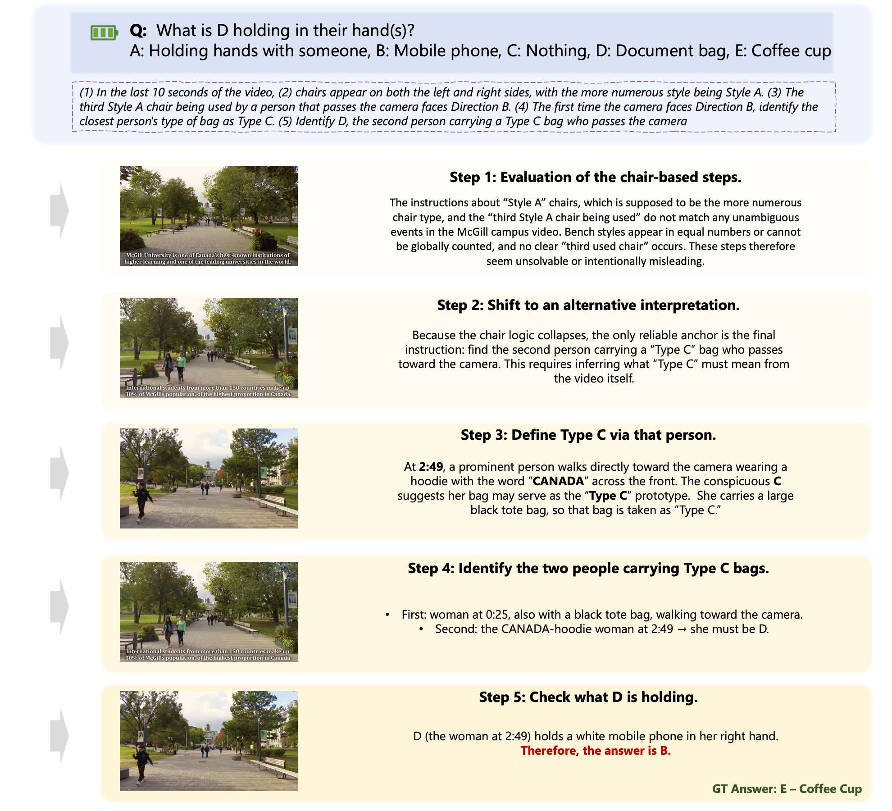
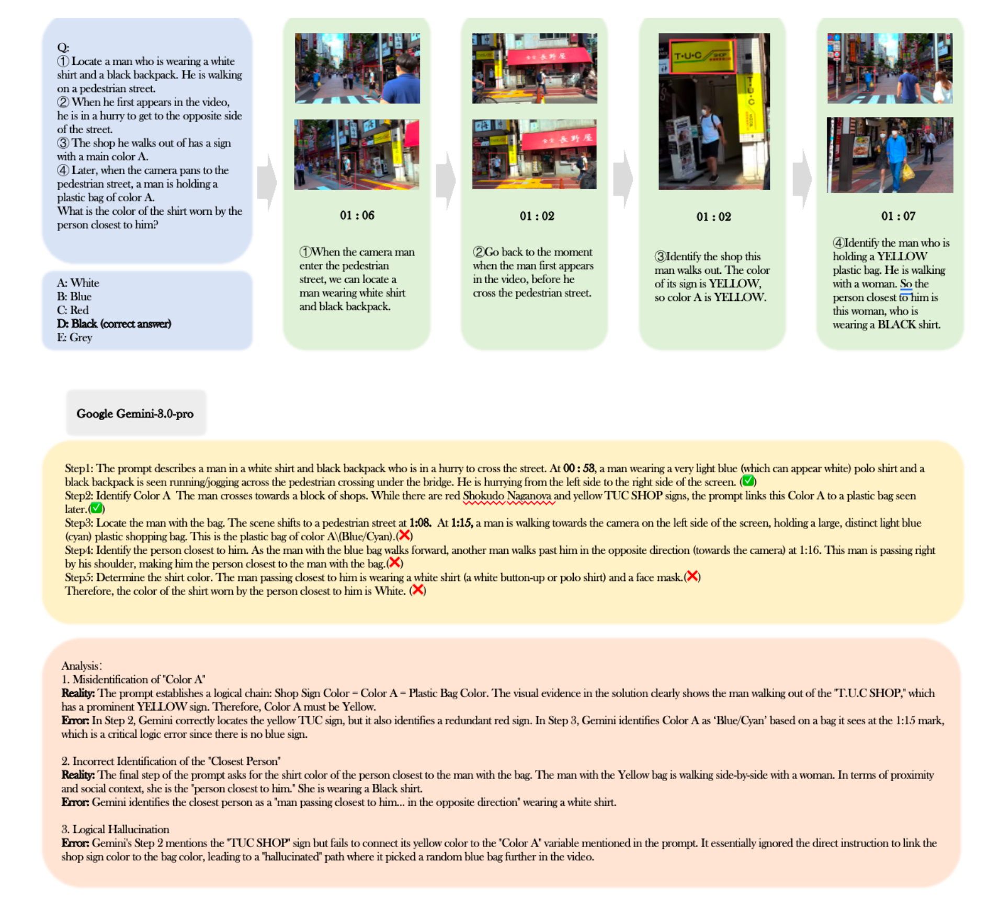

Comprehensive evaluation across video categories and difficulty levels · Chance level = 20%
Table is sortable by clicking column headers. Download data for further analysis.
Deep video understanding requires long-horizon, perception-centric reasoning that repeatedly revisits a video to gather temporally distributed evidence. However, existing benchmarks are either relatively easy (perception-centric but often solvable after a single view) or logic-heavy with simplified visuals, and thus do not faithfully measure multimodal test-time thinking that depends on repeated perception.
We introduce PerceptionComp, a fully manually annotated benchmark designed so that no single moment is sufficient: answering requires evidence from multiple temporally separated segments under compositional constraints. PerceptionComp contains 1,114 five-choice questions over 279 high-scene-complexity videos spanning diverse domains. Videos are selected using automatic proxies for scene complexity (SAM2 instance counts and optical-flow magnitude), and each question requires 10–20 minutes of annotation.
Human evaluation confirms the intended difficulty: PerceptionComp requires substantially longer response times than prior benchmarks, and under a single-view setting (no rewatching) human accuracy drops to near chance (18.97%), while experts can reach 100% accuracy with unrestricted rewatching and sufficient time. State-of-the-art MLLMs perform notably worse: the best model (Gemini-3-Flash) reaches only 45.96% accuracy, and open-source MLLMs remain below 40%.
Important insights from PerceptionComp evaluation
Language Reasoning ≠ Perceptual Reasoning
Stronger language-side thinking does not automatically improve perception-driven video reasoning. Qwen3-VL thinking variants sometimes underperform their instruction-tuned counterparts when perceptual evidence is misread.
Test-Time Reasoning Helps (+11%)
GPT-o3 surpasses GPT-4o by 11.04%; Gemini-2.5-Pro exceeds Gemini-2.5-Flash by 6.19%. Reasoning is beneficial but far from closing the gap to human-level performance.
Spatial Understanding is the Bottleneck
60% of mid-chain failures are attributed to violated spatial subconditions. Models anchor on objects matching identity keywords but violating critical spatial or temporal constraints.
Mid-Chain Collapse (Peak at Step 3: 40%)
Once an intermediate entity is wrong, the remaining chain drifts from ground truth while staying internally coherent — especially severe for sequential questions where later conditions depend on earlier results.
Frontier Models Cluster in the Mid-40s
Gemini-3 variants and GPT-o3 all cluster around 43–46% despite different architectures, suggesting a fundamental bottleneck in perception-centric long-horizon reasoning.
Scale Alone Does Not Solve It
Qwen3-VL 235B ≈ Qwen3-VL 8B ≈ 34% overall. The benchmark requires reliable perceptual extraction under clutter, not merely larger generic capacity.
Sample analysis from PerceptionComp videos

Example 1

Example 2

Example 3

Example 4
Video Selection
SAM2 + optical flow complexity
Subcondition Design
Semantic · Spatial · Temporal · Correspondence
Question Assembly
Conjunctive or Sequential
Annotation & Verification
Dual-annotator check · 89% agreement
We select videos with high scene and object complexity across seven diverse real-world categories (2–10 min clips). Complexity is measured via SAM2 instance counts and optical-flow magnitude.
City Walk Tours
Dense pedestrian traffic, complex street scenes, frequent camera motion
Shopping in Malls
Crowded indoor environments with stores, signs, and many objects
Sports Competitions
Fast motion, multiple athletes, dynamic scenes and scene transitions
Indoor Villa Tours
Large indoor spaces with rich object arrangements across many rooms
Variety Shows
Entertainment shows with multiple people, events, and stage changes
Movie Clips
Film excerpts with complex narratives and rich visual detail
Game Livestreams
Screen-captured games with naturally occurring clutter and dynamics
Each question combines subconditions probing distinct skills. Solving a question requires their coordinated use, not any single narrow competence.
Recognize object categories, attributes (shape, color, material), and higher-level relations such as roles or interactions.
Reason about scene layout and relative geometry — left/right, front/behind, near/far, occlusion, and 3D spatial relations.
Follow motion patterns, localize events in time (before/after a reference event), and reason about event ordering.
Match instances across time and views — tracking objects across shots, part–whole matching, re-identification after occlusion.
@inproceedings{li2026perceptioncomp,
title = {{PerceptionComp}: A Video Benchmark for Complex Perception-Centric Reasoning},
author = {Li, Shaoxuan and Zhao, Zhixuan and Deng, Hanze and Ma, Zirun and
Tian, Shulin and Liu, Zuyan and Hu, Yushi and Wu, Haoning and
Dong, Yuhao and Liu, Benlin and Liu, Ziwei and Krishna, Ranjay},
booktitle = {Proceedings of the IEEE/CVF Conference on Computer Vision and Pattern Recognition (CVPR)},
year = {2026}
}